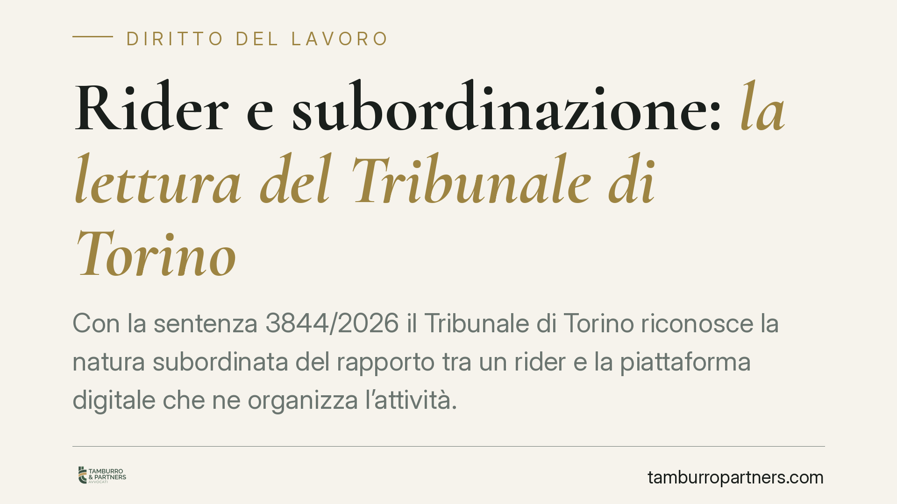

Rider e subordinazione: la lettura del Tribunale di Torino
Con la sentenza 3844/2026 il Tribunale di Torino riconosce la natura subordinata del rapporto tra un rider e la piattaforma digitale che ne organizza l'attività. La decisione riapre il tema della qualificazione giuridica del lavoro tramite app e obbliga le imprese del delivery a rivedere assetti contrattuali e organizzativi. Ecco i punti che contano.

Il caso
Un rider aveva agito contro la società titolare della piattaforma digitale per la quale svolgeva consegne, chiedendo l'accertamento della natura subordinata del rapporto. La società qualificava invece la collaborazione come autonoma, valorizzando la libertà del lavoratore di accettare o rifiutare le proposte di consegna.
Il Tribunale di Torino, con la sentenza 3844/2026 del 30 settembre 2026, ha accolto la domanda del lavoratore, ritenendo prevalenti gli indici della subordinazione.
Inquadramento normativo
La qualificazione del rapporto di lavoro ruota attorno all'art. 2094 del codice civile, che definisce il lavoratore subordinato come chi si obbliga a collaborare nell'impresa prestando la propria attività "alle dipendenze e sotto la direzione" del datore. L'elemento distintivo è l'eterodirezione: il potere del committente di dirigere, controllare e sanzionare la prestazione.
Accanto a questa disciplina generale opera l'art. 2 del D.lgs. 81/2015, che estende le tutele del lavoro subordinato alle collaborazioni etero-organizzate, cioè quelle le cui modalità di esecuzione sono organizzate dal committente, "anche mediante piattaforme digitali". Il legislatore ha così tipizzato il caso dei rider: non serve provare la piena eterodirezione classica, è sufficiente che l'organizzazione dei tempi e dei luoghi di lavoro sia determinata dalla piattaforma.
A completare il quadro, il Capo V-bis dello stesso decreto (artt. 47-bis e seguenti), introdotto dal D.l. 101/2019, detta tutele minime per i lavoratori autonomi delle piattaforme, sul presupposto che non tutti i rapporti siano riconducibili alla subordinazione.
Perché la decisione conta
Il Tribunale ha ritenuto che la libertà di accettare o rifiutare le consegne non escluda, di per sé, la subordinazione. Ciò che pesa è il modo in cui la piattaforma governa la prestazione una volta accettata: assegnazione degli ordini tramite algoritmo, geolocalizzazione, sistemi reputazionali che condizionano l'accesso ai turni e alle proposte di lavoro.
Questi strumenti configurano, secondo il giudice, un potere direttivo e di controllo esercitato per via tecnologica. L'algoritmo diventa il mezzo attraverso cui si manifesta l'organizzazione datoriale. Da qui la qualificazione del rapporto come subordinato, con le conseguenze in termini di retribuzione, contribuzione, tutele previdenziali e disciplina del recesso.
Implicazioni pratiche
Per le imprese del delivery la decisione conferma un orientamento sempre più consolidato: la formula contrattuale scelta sulla carta non basta se l'organizzazione concreta rivela dipendenza economica e gestionale. La riqualificazione espone la società a differenze retributive, versamenti contributivi arretrati e possibili sanzioni.
Per i rider la pronuncia rafforza la possibilità di far valere le tutele del lavoro subordinato quando la piattaforma, di fatto, governa turni, priorità e continuità del lavoro.
Va ricordato che si tratta di una decisione di primo grado, come tale suscettibile di impugnazione, e che ogni caso va valutato sulle sue circostanze concrete. Non esiste un automatismo: la qualificazione dipende dall'assetto reale del rapporto.
Cosa fare in concreto
- Analizzate l'organizzazione effettiva del lavoro, non solo il testo del contratto: assegnazione ordini, sistemi reputazionali, controllo tramite app.
- Mappate i profili contributivi e retributivi già maturati, per stimare l'esposizione economica in caso di riqualificazione.
- Verificate la trasparenza degli algoritmi che gestiscono turni e priorità, alla luce degli obblighi informativi verso i lavoratori.
- Se siete rider, conservate le evidenze delle modalità operative: schermate dell'app, comunicazioni, dati sui turni e sui punteggi.
- Valutate una consulenza mirata prima di modificare l'inquadramento o avviare un contenzioso.
Uno sguardo d'insieme
La sentenza torinese si inserisce in un percorso, anche europeo, di crescente attenzione al lavoro su piattaforma. La direzione è chiara: l'automazione dell'organizzazione non fa venire meno le tutele quando il lavoratore è economicamente dipendente e privo di reale autonomia gestionale. Le imprese del settore hanno interesse a intervenire prima che sia un giudice a decidere per loro.
Disclaimer
Contributo informativo a cura di Tamburro & Partners - Avv. Giuseppe Tamburro. Non costituisce parere legale.
Ogni storia di lavoro ha i suoi tempi.
Se gestisci HR e vuoi un confronto su contenzioso, ispezioni o licenziamenti, scrivi allo studio. Ti rispondiamo entro un giorno lavorativo.